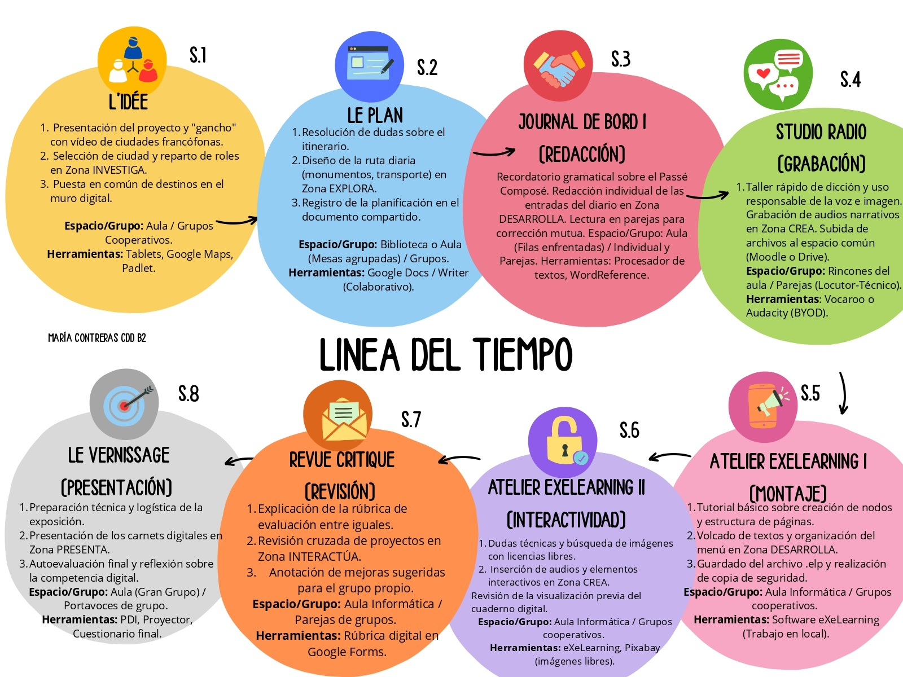

Plan de travail
Dans ce projet, tu vas travailler pendant 8 séances pour créer ton carnet de voyage numérique.
Observe le plan de travail suivant pour comprendre les différentes étapes du projet.

Les étapes du projet
Séance 1 – L’idée
Présentation du projet, découverte de villes francophones et choix du destination. Organisation des groupes et répartition des rôles.
Séance 2 – Le plan
Organisation de l’itinéraire de voyage (lieux à visiter, activités, transport) et travail collaboratif.
Séance 3 – Journal de bord I
Rédaction des premières entrées du journal en utilisant le passé composé. Correction en binômes.
Séance 4 – Studio radio
Enregistrement d’un audio ou d’une narration orale pour raconter une expérience du voyage.
Séance 5 – Atelier eXeLearning I
Création de la structure du carnet numérique (pages, organisation des contenus).
Séance 6 – Atelier eXeLearning II
Insertion des textes, images et audios. Vérification des licences des ressources.
Séance 7 – Revue critique
Évaluation entre pairs, révision des projets et amélioration du travail.
Séance 8 – Le vernissage
Présentation finale du carnet de voyage et réflexion sur le travail réalisé.
Conseil
Suis les étapes dans l’ordre, travaille en équipe et respecte les délais pour réussir ton projet.
Tu peux consulter la version complète du plan de travail ici :